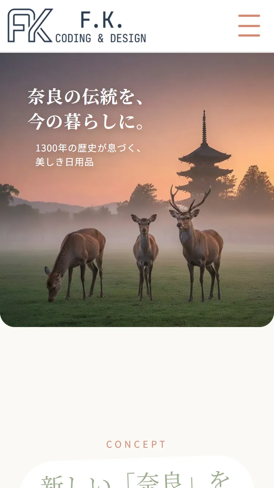
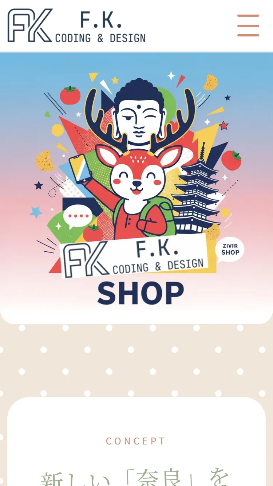
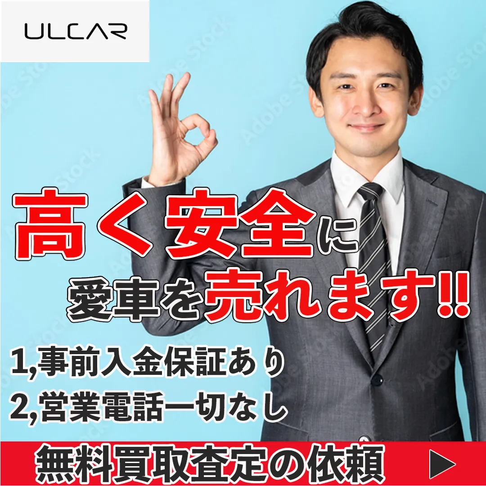
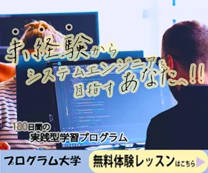
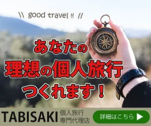
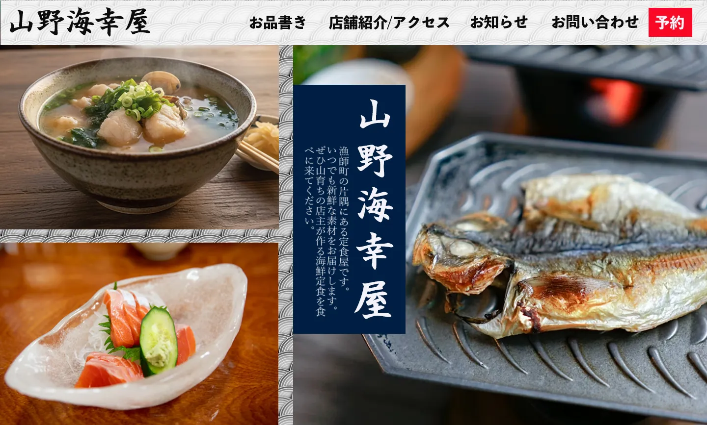
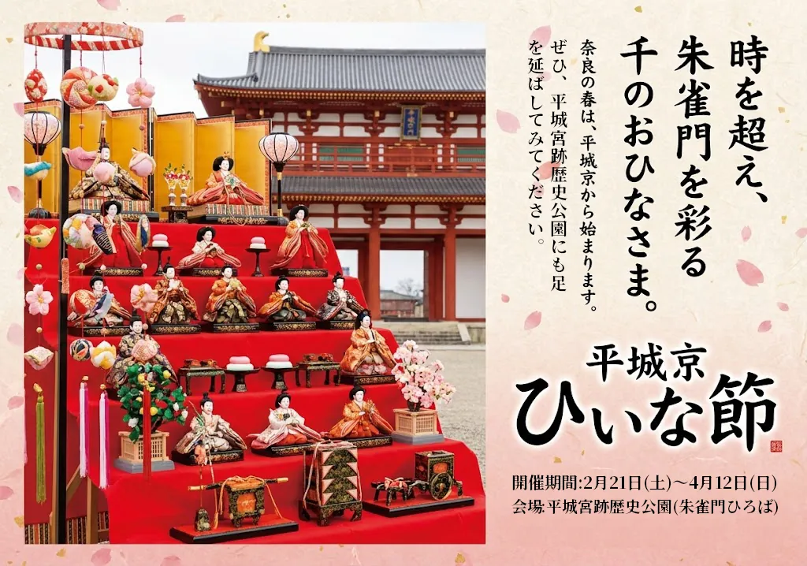
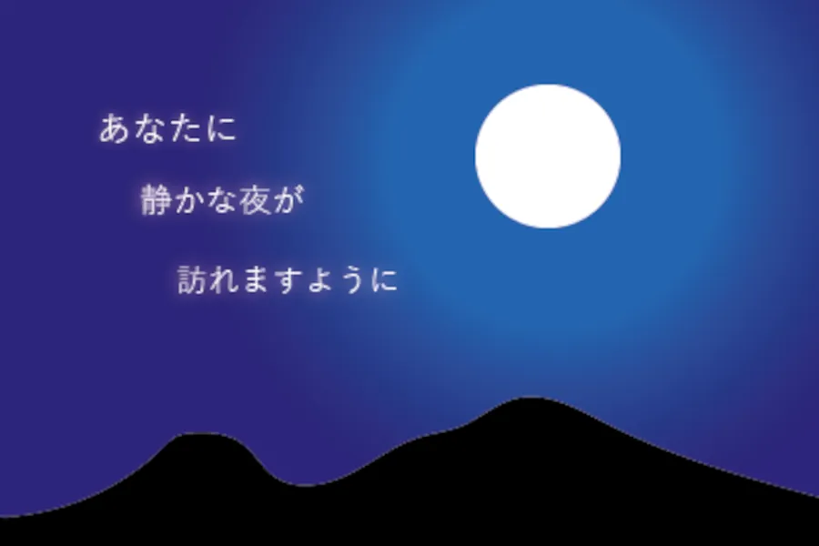
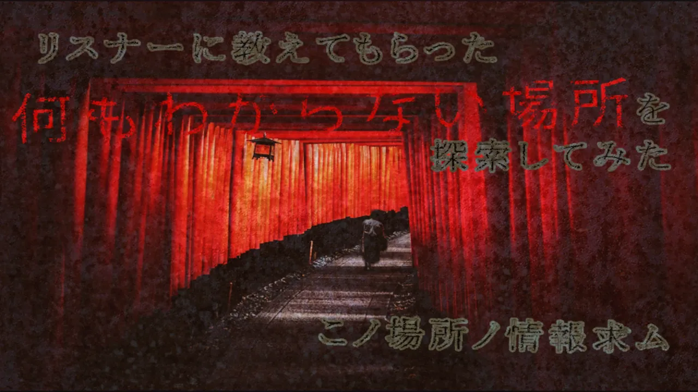

Frontend Engineer
UIを正確に再現するコーディングが強みです
作品を見る
About
自己紹介テキストが入ります。ダミーテキストです。
Skills
- HTML / CSS
- JavaScript
- Responsive Design
Works
職業訓練学校の課題として制作したWeb初心者～中級者向けデザイン教室Webサイト（デザイン〜コーディング）
意識した点
- モバイルファースト設計
- レスポンシブデザイン
- CTAボタンの挙動制御

企業実習時に制作した工芸品購入希望者向けWebサイト（デザイン〜コーディング）
意識した点
- レスポンシブデザイン
- 工芸品を取り扱うサイトとして違和感の少ない落ち着いたデザイン

企業実習時に制作した観光客向けWebサイト（デザイン〜コーディング
意識した点
- レスポンシブデザイン
- より観光客への訴求を重視したポップなデザイン

職業訓練学校のデザイン課題として制作した個人旅行者向け訴求を意識した自動車買取初心者向けの中古車買取販売会社バナー広告
意識した点
- 「高く安全に売れる」という情報の可読性
- 清潔感と信頼感の向上

職業訓練学校のデザイン課題として制作したWeb業界未経験者向けのパソコンスクールバナー広告
意識した点

職業訓練学校のデザイン課題として制作した個人旅行者向け訴求を意識した旅行代理店バナー広告
意識した点
- 個人で未知の場所を進んでいる雰囲気
- 見た目の明るさ

職業訓練学校のデザイン課題として制作した観光客向け海鮮定食屋のサイトファーストビュー
意識した点
- ナビの予約を目出させる赤の背景色
- 画像と画像の間やheaderの背景に薄くかけている青海波のパターン模様

企業実習中にAIを用いて制作したイベント告知用のPOP
意識した点
- AI生成の画像が突飛になりすぎないようにするプロンプト調整
- サッと作ってほしいという企業実習担当者の希望を叶える短時間作業

職業訓練学校のデザイン課題として制作したポストカード
意識した点

職業訓練学校のデザイン課題として制作したYouTube用サムネイル
意識した点
- 本来は明るい画像をホラーテイストにする明度と彩度の調整
- 違和感を持たせるテキストの傾き
